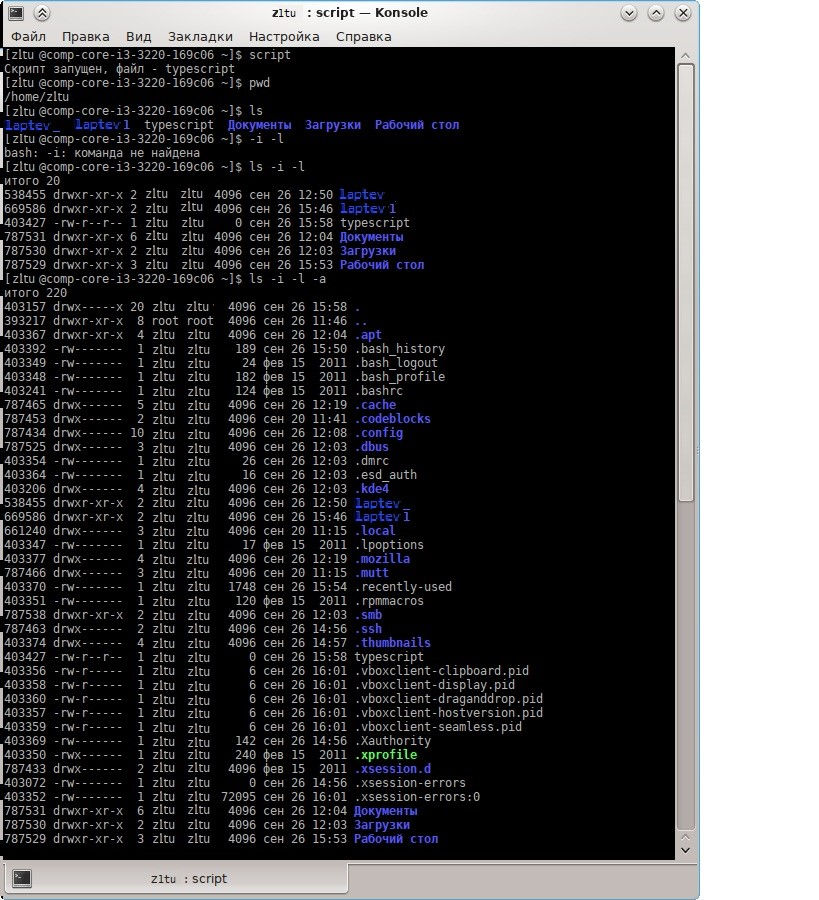

Тема: Работа в терминале - 1: команды Linux, работа с файлами.
Задание:
В терминале ввести команду:
$ script
Скрипт запущен, файл — typescript
$
Это сообщение Linux означает, что протокол вашей работы будет писаться в файл typescript и он будет создан в том каталоге, где вы сейчас находитесь.
3. Прежде всего, убедитесь, что вы находитесь в своём домашнем каталоге. Это можно сделать командой:
$ pwd
4. Посмотрите, какие файлы уже находятся в вашем домашнем каталоге. Ввести команду:
$ ls
5. Ввести команду:
$ ls -i -l
6. Обратить внимание на первую колонку вывода этой команды. В отчёте объяснить, что означают эти числа.
7. Ввести команду:
$ ls -i -l -a
8. Обратить внимание на появившиеся каталоги и файлы с точкой. В отчёте объяснить, что это за файлы и каталоги.
9. Ввести команду:
$ ls -la
10. Это наиболее часто используемая форма команды ls.
11. Создать файл с именем = фио (например, obama_b.txt) командой
$ touch (имя_файла)
12. Ввести в этот файл следующую информацию «Я, (фамилия имя отчество), студент УлГУ, ФМиИТ, группа (группа)» командой:
$ cat > (имя_файла)
информация, указанная выше
Ctrl-D
(!!!) Внимание! Одна угловая скобка (>) означает, что файл (имя_файла) будет создан вновь и будет содержать ту инфу, что вы введёте. Если такой файл уже существует, то старое содержание файла будет затёрто (исчезнет).
Если вы хотите добавить в файл инфу, тогда укажите две угловых скобки (вот так: >>).
13. Проверить, что информация в файл введена, командой:
$ cat (имя_файл)
14. Дополнить созданный файл следующей информацией «Это результат выполнения лабораторной №5» с помощью команды:
$ echo (информация) >> (имя_файла)
15. Дополнить созданный файл следующей информацией «Дисциплина «Операционные системы», курс N-ый, семестр K-ый» с помощью команды:
$ tee >> (имя_файла)
(информация, указанная выше)
(Ctrl-C)
16. Проверить, что информация в файл введена правильно, командой:
$ cat (имя_файла)
17. И в конце файла поставить дату и время:
$ date >> (имя_файла)
18. Нажать на клавиатуре клавишу PrintScreen. В открывшемся окне программы Ksnapshot клавишей (Сохранить как . . .) сохранить скрин окна терминала (не всего экрана, а только окна терминала!) в файл laba03.jpg в свой домашний каталог.
Внимание! Скрин не всего экрана, а только окна терминала!
19. Завершение задания: ввести Ctrl-D. В терминале появится сообщение
«Скрипт выполнен, файл - typescript»
20. Таким образом в вашем домашнем каталоге образовался файл с именем typescript. Это протокол вашей работы. А также был создан скрин окна терминала перед завершением работы. На скрине должны хорошо читаться последние ваши команды в терминале.
